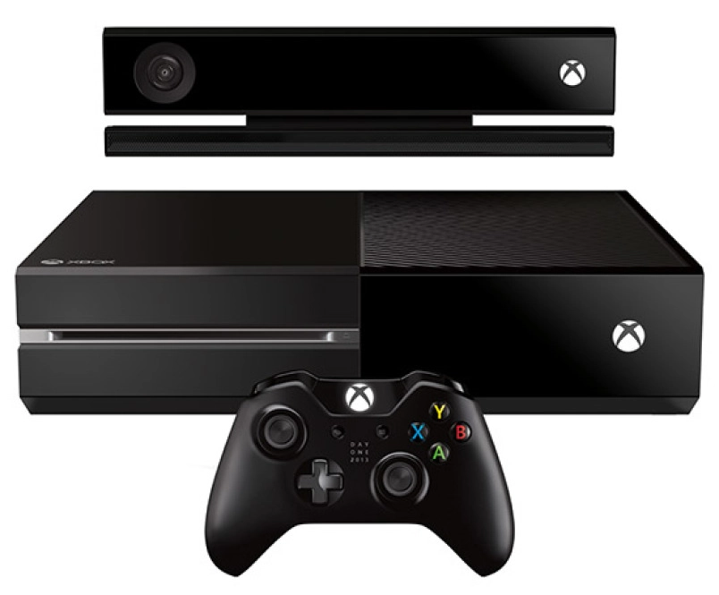

Release
The Xbox One was released on November 22, 2013 in North America, as the successor of the Xbox 360. The Xbox One competes with Sony's PlayStation 4 and Nintendo's Wii U and Switch as part of the eighth generation of video game consoles. Announced on May 21, 2013, the Xbox One has an emphasis on internet-based features, including the ability to record and stream gameplay, and the ability to integrate with a set-top box to watch cable or satellite TV through the console with an enhanced guide interface and Kinect-based voice control.
Reception
Following its unveiling, the Xbox One proved controversial for its original digital rights management and privacy practices; while Microsoft touted the ability for users to access their library of games (regardless of whether they were purchased physically or digitally) on any Xbox One console without needing their discs, and the ability to share their entire library with 10 designated "family" members, all games would have to be tied to the user's Xbox Live account and their Xbox One console, and the console would be required to connect to the Internet on a periodic basis (at least once every 24 hours) to synchronize the library, or else the console would be unable to play any games at all. After an overwhelmingly negative response from critics and consumers (who also showed concerns that the system could prevent or hinder the resale of used games), Microsoft announced that these restrictions would be dropped. Microsoft was also criticized for requiring the Xbox One to have its updated Kinect peripheral plugged in to function, which critics and privacy advocates believed could be used as a surveillance device. As a gesture toward showing a commitment to user privacy, Microsoft decided to allow the console to function without Kinect.... Find out more